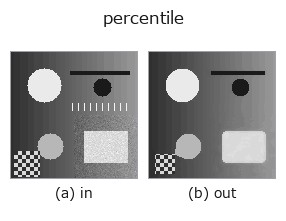

rank op• Datenarten: image → image
• Aufruf: fullseye.apply(img, "percentile", a=0.5, b=0.5) (das 2-D-Modell ist ein Bild plus zwei skalare Regler a,b∈[0,1])
• HALCON-Äquivalent: rank_image (Bedeutung und Parameter sind in der HALCON-Referenz nachzulesen)

*Die Abbildung ist die tatsächliche Ausgabe auf einer synthetischen 128×128-Eingabe. Links Eingabe, rechts Ausgabe (ein Nicht-Bild-Rückgabewert wird als Wert gezeigt).*
Rangordnungsfilter für ein beliebiges Perzentil. Entspricht HALCONs `rank_image` (Compute a rank filter with arbitrary masks.).
> Die ausführliche Beschreibung unten ist der Originaltext — Zusammenfassung und Überschriften sind übersetzt.
`a が窓サイズを 3,5,7,9（_k(a)）に、b が抽出するパーセンタイルを 5〜95%（int(5+90b)）に振る。b が 0 に近いほど _min_filter、1 に近いほど _max_filter、中間で _median` に近づく——3 op を 1 つに統合した一般形。
• Leitfaden zur Familie gallery2d_smoothing_rank
• Katalog der Beispieldaten (Download-URLs / Lizenzen) — 2-D nutzt skimage.data (BSD/Public Domain) plus synthetische Bilder, 3-D nennt Download-URLs echter Datenquellen (Stanford, PDS, …).
• Herkunft und Literatur der Operatoren — die Quellen der Forschung/Verfahren, auf denen diese Operatorfamilie beruht.
• Der kanonische Algorithmus (Autor, Jahr) und seine Anwendungen stehen im Familienleitfaden oben.
Das Programm unten ist nachweislich lauffähig (gleiche Eingabe wie die Abbildung). In der Studio-Hilfe wird dieser Block zu Schaltflächen, die es sofort laden und ausführen.
percentile 0.50 0.50
▸ Load this pipeline · Load & run
• gallery2d_smoothing_rank — py -3.11 examples/gallery2d_smoothing_rank.py
image als Eingabe)identity · gaussian · mean_box · bilateral · unsharp · median · min_filter · max_filter
rank)median · min_filter · max_filter · sk_median_disk · cv_median · median_image · median_rect · median_separate
*Provenance: ops.py — 2D Operator-Registry. Diese Notiz wird von tools/opdocs.py md erzeugt (nicht von Hand bearbeiten).*
© 2026 Kazufumi Furuse — Fullseye operator documentation. Licensed under Apache-2.0.